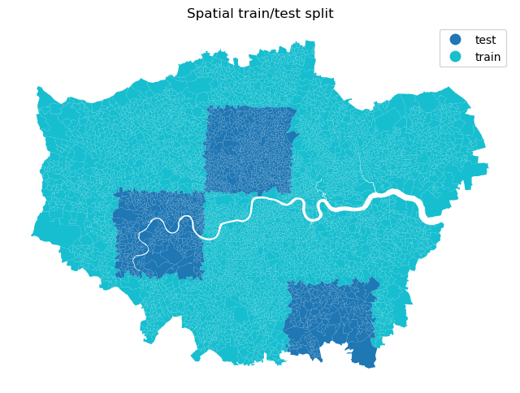

%matplotlib inline
import numpy as np
import pandas
import geopandas
import matplotlib.pyplot as plt
from sklearn.linear_model import Ridge
from sklearn.preprocessing import StandardScaler
from sklearn.pipeline import make_pipeline
from sklearn.metrics import mean_squared_error, r2_scoreModel
In this notebook, we build a set of models to predict IMD in 2019 and compare them.
Data
# Read data
imd = pandas.read_csv('imd.csv', index_col='LSOA21CD')
socio = pandas.read_csv('Socioeconomic.csv', index_col='LSOA21CD')
manual = pandas.read_csv('landsat_features.csv', index_col='LSOA21CD')
lsoa = geopandas.read_file('uk_lsoa_london_embeds_2020.geojson').set_index('LSOA21CD')
# Column names and easy handles
embed_cols = [c for c in lsoa.columns if c.startswith('A') and c.endswith('_mean')]
embeds = pandas.DataFrame(lsoa[embed_cols])
socio_cols = [c for c in socio.columns if c != 'IMD_decile']
y = imd['imd19_score']
train = imd['train_test'] == 'train'ERROR 1: PROJ: proj_create_from_database: Open of /opt/conda/envs/gds/share/proj failedSetup
We use a pre-defined spatial train/test split based on a regular grid overlaid on London (stored in imd.csv). Training LSOAs come from 80% of grid blocks; the remaining 20% are held out for testing. All models are fitted on training LSOAs and evaluated on test LSOAs using RMSE and \(R^2\).
fig, ax = plt.subplots(figsize=(8, 8))
lsoa.join(imd[['train_test']]).plot(
column='train_test', categorical=True, legend=True, ax=ax
)
ax.set_axis_off()
ax.set_title('Spatial train/test split')
plt.show()
To streamline model fitting, we define a helper method:
def fit_eval(X, y, train):
idx = X.dropna().index.intersection(y.dropna().index)
X, y_s, tr = X.loc[idx], y.loc[idx], train.loc[idx]
pipe = make_pipeline(StandardScaler(), Ridge())
pipe.fit(X[tr], y_s[tr])
preds = pipe.predict(X[~tr])
return {
'RMSE': np.sqrt(mean_squared_error(y_s[~tr], preds)),
'R²': r2_score(y_s[~tr], preds)
}And initialise the results store:
results = {}Models
Socioeconomic data
results['Socioeconomic'] = fit_eval(socio[socio_cols], y, train)Manual features
results['Manual features'] = fit_eval(manual, y, train)Embeddings
results['Embeddings'] = fit_eval(embeds, y, train)Socioeconomic + Manual features
results['Socioeconomic + Manual'] = fit_eval(
socio[socio_cols].join(manual, how='inner'), y, train
)Socioeconomic + Embeddings
results['Socioeconomic + Embeddings'] = fit_eval(
socio[socio_cols].join(embeds, how='inner'), y, train
)Comparison
Here we build pretty tables to compare performance metrics (one for each, RMSE and \(R^2\)) across all models.
comparison = pandas.DataFrame(results).T.round(3)
comparison.index.name = 'Model'
comparison| RMSE | R² | |
|---|---|---|
| Model | ||
| Socioeconomic | 6.647 | 0.693 |
| Manual features | 10.467 | 0.240 |
| Embeddings | 9.377 | 0.390 |
| Socioeconomic + Manual | 5.900 | 0.758 |
| Socioeconomic + Embeddings | 5.819 | 0.765 |